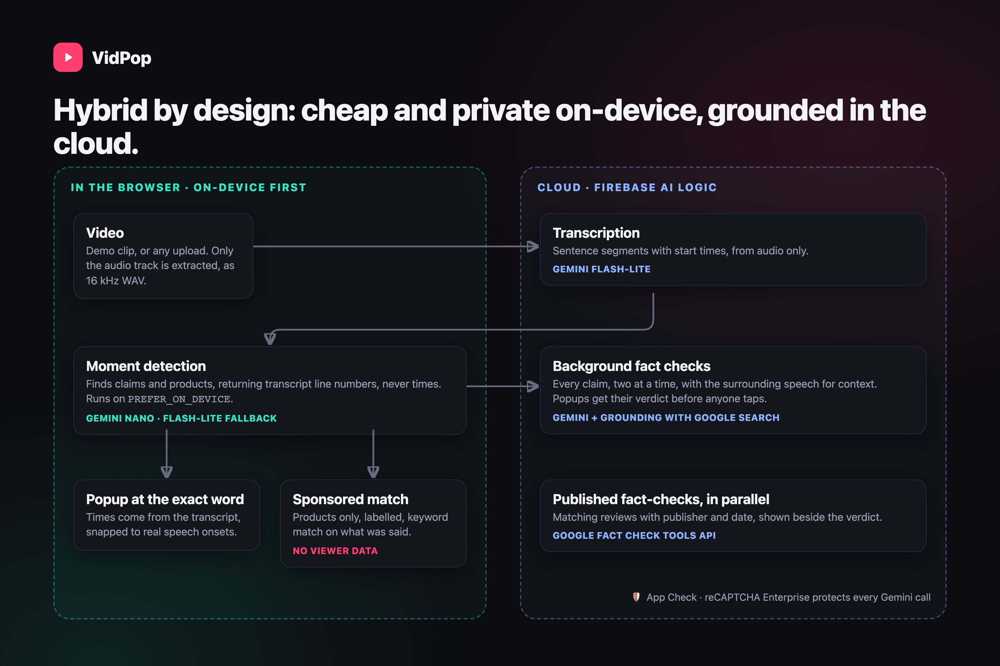

Short videos are full of confident claims.
Checking one means pausing, leaving the app and searching.
So almost nobody does.
VidPop brings the answer into the video.
Its claims were found and checked before playback.
The dots on the timeline are the claims.
Its fact check is already done: ✕ Sources disagree.
A neutral verdict, cited sources and Google Search, from Gemini with Grounding with Google Search.
Each one is verified in the background, so the next popup already has its verdict.
Gemini Flash-Lite transcribes the audio, then the claims are found and checked automatically.
Transcribed, scanned and fact-checked in seconds.
“I think” doesn't hide a checkable claim. ✕ Contradicted.
Judged in context, not on a technicality: lab-made materials can beat diamond, but the speaker means wood.
✕ Contradicted, with sources, before anyone taps.
A camera mentioned at 0:03 becomes a card at 0:03.
Sponsored cards match what was said, never the viewer.
120 fictional products. The click carries the product, not the viewer, and no payment is taken.
